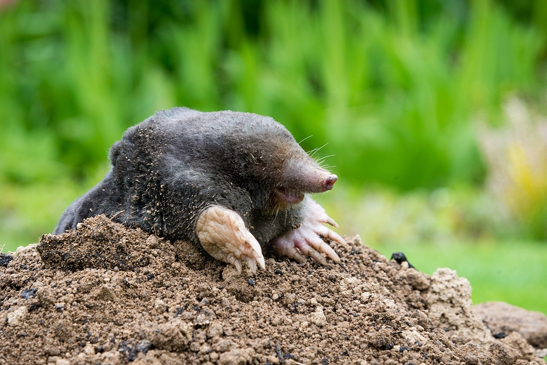

Maulwürfe sind kleine Säugetiere, die mit ihren Schaufelhänden unter der Erde Tunnel graben
| Eigenschaft | Details |
|---|---|
| Wissenschaftlicher Name | Talpidae (Familie) |
| Verbreitung | Europa, Asien, Nordamerika |
| Lebensraum | Unterirdische Gänge, Wiesen, Gärten |
| Größe | 10–20 cm |
| Gewicht | 50–150 g |
| Lebenserwartung | 3–6 Jahre (wild), bis 10 Jahre (Gefangenschaft) |
| Ernährung | Insekten, Würmer, kleine Wirbeltiere |
| Aktivität | Vor allem nachts aktiv |
| Fortpflanzung | 1–2 Würfe/Jahr, 3–7 Junge |
| Feinde | Raubvögel, Füchse, Hunde |
| Grabenaktivität | Graben bis 5 m täglich |
| Bedeutung im Ökosystem | Bodenbelüftung, Insektenkontrolle |
Quellen: Tierchenwelt, Wikipedia
Um noch über die Maus zu lernen, clicken Sie hier
Oder besuchen Sie die Homepage hier
Diese Webseite wurde von Jonathan 9B erstellt.